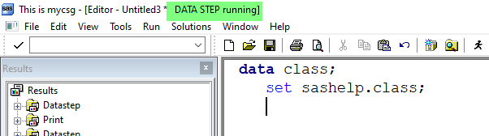
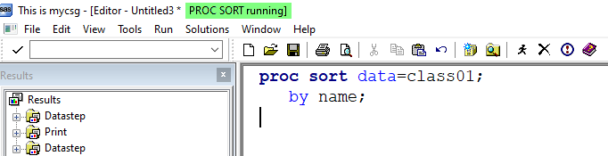

*Copyright @ www.mycsg.in;
What is the word meaning of explicit
Stated clearly and in detail, leaving no room for confusion or doubt.
When does a SAS DATA step write an observation to the output dataset
A DATA step normally writes the contents of the Program Data Vector as an observation when SAS reaches a step boundary
A `run` statement, a new `data` statement, or a `proc` statement can act as a step boundary
What does an explicit OUTPUT statement do
An `output` statement explicitly tells SAS to write the current contents of the PDV to one or more output datasets
Once at least one explicit `output` statement is used, SAS no longer performs the normal implicit output at the end of the iteration
This gives the programmer precise control over when and where observations are written
Different step boundary scenarios
RUN statement as step boundary
data class01; set sashelp.class; run;
Copy Code
View Log
SAS Log
data class01; set sashelp.class; run; NOTE: There were 19 observations read from the data set SASHELP.CLASS. NOTE: The data set WORK.CLASS01 has 19 observations and 5 variables. NOTE: Compressing data set WORK.CLASS01 increased size by 100.00 percent. Compressed is 2 pages; un-compressed would require 1 pages. NOTE: DATA statement used (Total process time): real time 0.00 seconds cpu time 0.00 seconds
PROC statement as step boundary for the DATA step
data class02; set sashelp.class; proc sort data=class02; by age; run;
Copy Code
View Log
SAS Log
data class02; set sashelp.class; NOTE: There were 19 observations read from the data set SASHELP.CLASS. NOTE: The data set WORK.CLASS02 has 19 observations and 5 variables. NOTE: Compressing data set WORK.CLASS02 increased size by 100.00 percent. Compressed is 2 pages; un-compressed would require 1 pages. NOTE: DATA statement used (Total process time): real time 0.00 seconds cpu time 0.00 seconds proc sort data=class02; by age; run; NOTE: There were 19 observations read from the data set WORK.CLASS02. NOTE: The data set WORK.CLASS02 has 19 observations and 5 variables. NOTE: Compressing data set WORK.CLASS02 increased size by 100.00 percent. Compressed is 2 pages; un-compressed would require 1 pages. NOTE: PROCEDURE SORT used (Total process time): real time 0.00 seconds cpu time 0.00 seconds
DATA statement as step boundary for the first DATA step
The DATA statement that starts the second step also ends the first step
data class03; set sashelp.class; data class04; set sashelp.class; run;
Copy Code
View Log
SAS Log
data class03; set sashelp.class; NOTE: There were 19 observations read from the data set SASHELP.CLASS. NOTE: The data set WORK.CLASS03 has 19 observations and 5 variables. NOTE: Compressing data set WORK.CLASS03 increased size by 100.00 percent. Compressed is 2 pages; un-compressed would require 1 pages. NOTE: DATA statement used (Total process time): real time 0.01 seconds cpu time 0.00 seconds data class04; set sashelp.class; run; NOTE: There were 19 observations read from the data set SASHELP.CLASS. NOTE: The data set WORK.CLASS04 has 19 observations and 5 variables. NOTE: Compressing data set WORK.CLASS04 increased size by 100.00 percent. Compressed is 2 pages; un-compressed would require 1 pages. NOTE: DATA statement used (Total process time): real time 0.00 seconds cpu time 0.01 seconds
What happens when a step boundary is not present
If a submitted step has no step boundary, SAS waits because the step is incomplete
The same idea applies to incomplete PROC steps as well
A DATA step without a step boundary
data class05; set sashelp.class;
Copy Code
View Log
SAS Log
data class05; set sashelp.class;
Data Step Running Screenshot
Data Step Running Screenshot

A PROC step without a step boundary
proc sort data=class05; by name;
Copy Code
View Log
SAS Log
NOTE: There were 19 observations read from the data set SASHELP.CLASS. NOTE: The data set WORK.CLASS05 has 19 observations and 5 variables. NOTE: Compressing data set WORK.CLASS05 increased size by 100.00 percent. Compressed is 2 pages; un-compressed would require 1 pages. NOTE: DATA statement used (Total process time): real time 0.00 seconds cpu time 0.01 seconds proc sort data=class05; by name;
Proc Step Running Screenshot
Proc Step Running Screenshot

Replacing implicit output with an explicit OUTPUT statement
Basics of the explicit OUTPUT statement
Implicit output happens automatically at the end of the DATA step iteration when no explicit output statement is present
If we add `output;` explicitly, SAS writes the observation at that point in the code
The following two DATA steps produce the same final rows even though one uses implicit output and the other uses explicit output
data class_i; set sashelp.class; agemon=age*12; run; data class_e; set sashelp.class; agemon=age*12; output; run;
Copy Code
View Log
SAS Log
NOTE: There were 19 observations read from the data set WORK.CLASS05. NOTE: The data set WORK.CLASS05 has 19 observations and 5 variables. NOTE: Compressing data set WORK.CLASS05 increased size by 100.00 percent. Compressed is 2 pages; un-compressed would require 1 pages. NOTE: PROCEDURE SORT used (Total process time): real time 0.01 seconds cpu time 0.00 seconds data class_i; set sashelp.class; agemon=age*12; run; NOTE: There were 19 observations read from the data set SASHELP.CLASS. NOTE: The data set WORK.CLASS_I has 19 observations and 6 variables. NOTE: Compressing data set WORK.CLASS_I increased size by 100.00 percent. Compressed is 2 pages; un-compressed would require 1 pages. NOTE: DATA statement used (Total process time): real time 0.01 seconds cpu time 0.00 seconds data class_e; set sashelp.class; agemon=age*12; output; run; NOTE: There were 19 observations read from the data set SASHELP.CLASS. NOTE: The data set WORK.CLASS_E has 19 observations and 6 variables. NOTE: Compressing data set WORK.CLASS_E increased size by 100.00 percent. Compressed is 2 pages; un-compressed would require 1 pages. NOTE: DATA statement used (Total process time): real time 0.00 seconds cpu time 0.01 seconds
Inspect `class_i` and `class_e` and confirm that the datasets match
View Data
Dataset View
Multiple explicit OUTPUT statements
Each time SAS encounters an `output` statement, it writes the current PDV contents as an observation
If multiple output statements are executed during the same iteration, the same input observation can create multiple output rows
data class; set sashelp.class; run; data class01; set sashelp.class; output; output; run; data class02; set sashelp.class; output; output; output; run;
Copy Code
View Log
SAS Log
data class; set sashelp.class; run; NOTE: There were 19 observations read from the data set SASHELP.CLASS. NOTE: The data set WORK.CLASS has 19 observations and 5 variables. NOTE: Compressing data set WORK.CLASS increased size by 100.00 percent. Compressed is 2 pages; un-compressed would require 1 pages. NOTE: DATA statement used (Total process time): real time 0.00 seconds cpu time 0.00 seconds data class01; set sashelp.class; output; output; run; NOTE: There were 19 observations read from the data set SASHELP.CLASS. NOTE: The data set WORK.CLASS01 has 38 observations and 5 variables. NOTE: Compressing data set WORK.CLASS01 increased size by 100.00 percent. Compressed is 2 pages; un-compressed would require 1 pages. NOTE: DATA statement used (Total process time): real time 0.01 seconds cpu time 0.00 seconds data class02; set sashelp.class; output; output; output; run; NOTE: There were 19 observations read from the data set SASHELP.CLASS. NOTE: The data set WORK.CLASS02 has 57 observations and 5 variables. NOTE: Compressing data set WORK.CLASS02 increased size by 100.00 percent. Compressed is 2 pages; un-compressed would require 1 pages. NOTE: DATA statement used (Total process time): real time 0.00 seconds cpu time 0.01 seconds
`class01` contains twice as many observations as `sashelp.class`
`class02` contains three times as many observations as `sashelp.class`
View Data
Dataset View
Mention the name of the output dataset on the OUTPUT statement
The output dataset name can be listed explicitly on the `output` statement
This becomes especially important when a single DATA step creates more than one output dataset
data class01; set sashelp.class; output; run; data class02; set sashelp.class; output class02; run; data class03; set sashelp.class; run;
Copy Code
View Log
SAS Log
data class01; set sashelp.class; output; run; NOTE: There were 19 observations read from the data set SASHELP.CLASS. NOTE: The data set WORK.CLASS01 has 19 observations and 5 variables. NOTE: Compressing data set WORK.CLASS01 increased size by 100.00 percent. Compressed is 2 pages; un-compressed would require 1 pages. NOTE: DATA statement used (Total process time): real time 0.00 seconds cpu time 0.00 seconds data class02; set sashelp.class; output class02; run; NOTE: There were 19 observations read from the data set SASHELP.CLASS. NOTE: The data set WORK.CLASS02 has 19 observations and 5 variables. NOTE: Compressing data set WORK.CLASS02 increased size by 100.00 percent. Compressed is 2 pages; un-compressed would require 1 pages. NOTE: DATA statement used (Total process time): real time 0.01 seconds cpu time 0.00 seconds data class03; set sashelp.class; run; NOTE: There were 19 observations read from the data set SASHELP.CLASS. NOTE: The data set WORK.CLASS03 has 19 observations and 5 variables. NOTE: Compressing data set WORK.CLASS03 increased size by 100.00 percent. Compressed is 2 pages; un-compressed would require 1 pages. NOTE: DATA statement used (Total process time): real time 0.00 seconds cpu time 0.01 seconds
All three datasets contain the same rows in this example
The difference is only in how the observation writing instruction is expressed
View Data
Dataset View
Create multiple datasets in a single DATA step
More than one dataset name can be listed on the DATA statement
With implicit output, each observation is written to all output datasets listed on the DATA statement
With explicit output, we can write to all or selected output datasets
data copy1 copy2; set sashelp.class; run; data copy11 copy12; set sashelp.class; output; run; data copy21 copy22; set sashelp.class; output copy21 copy22; run; data copy31 copy32; set sashelp.class; output copy31; output copy32; run;
Copy Code
View Log
SAS Log
data copy1 copy2; set sashelp.class; run; NOTE: There were 19 observations read from the data set SASHELP.CLASS. NOTE: The data set WORK.COPY1 has 19 observations and 5 variables. NOTE: Compressing data set WORK.COPY1 increased size by 100.00 percent. Compressed is 2 pages; un-compressed would require 1 pages. NOTE: The data set WORK.COPY2 has 19 observations and 5 variables. NOTE: Compressing data set WORK.COPY2 increased size by 100.00 percent. Compressed is 2 pages; un-compressed would require 1 pages. NOTE: DATA statement used (Total process time): real time 0.03 seconds cpu time 0.01 seconds data copy11 copy12; set sashelp.class; output; run; NOTE: There were 19 observations read from the data set SASHELP.CLASS. NOTE: The data set WORK.COPY11 has 19 observations and 5 variables. NOTE: Compressing data set WORK.COPY11 increased size by 100.00 percent. Compressed is 2 pages; un-compressed would require 1 pages. NOTE: The data set WORK.COPY12 has 19 observations and 5 variables. NOTE: Compressing data set WORK.COPY12 increased size by 100.00 percent. Compressed is 2 pages; un-compressed would require 1 pages. NOTE: DATA statement used (Total process time): real time 0.00 seconds cpu time 0.00 seconds data copy21 copy22; set sashelp.class; output copy21 copy22; run; NOTE: There were 19 observations read from the data set SASHELP.CLASS. NOTE: The data set WORK.COPY21 has 19 observations and 5 variables. NOTE: Compressing data set WORK.COPY21 increased size by 100.00 percent. Compressed is 2 pages; un-compressed would require 1 pages. NOTE: The data set WORK.COPY22 has 19 observations and 5 variables. NOTE: Compressing data set WORK.COPY22 increased size by 100.00 percent. Compressed is 2 pages; un-compressed would require 1 pages. NOTE: DATA statement used (Total process time): real time 0.01 seconds cpu time 0.00 seconds data copy31 copy32; set sashelp.class; output copy31; output copy32; run; NOTE: There were 19 observations read from the data set SASHELP.CLASS. NOTE: The data set WORK.COPY31 has 19 observations and 5 variables. NOTE: Compressing data set WORK.COPY31 increased size by 100.00 percent. Compressed is 2 pages; un-compressed would require 1 pages. NOTE: The data set WORK.COPY32 has 19 observations and 5 variables. NOTE: Compressing data set WORK.COPY32 increased size by 100.00 percent. Compressed is 2 pages; un-compressed would require 1 pages. NOTE: DATA statement used (Total process time): real time 0.01 seconds cpu time 0.00 seconds
Examine the log and the output datasets to compare how many observations are written in each case
View Data
Dataset View
Test your understanding: how many observations will be present in each output dataset
The answer can be confirmed by checking the log and dataset views
`sashelp.class` contains 19 observations
data copy11 copy12 copy13; set sashelp.class; output copy11 copy12; output copy13; run; data copy21 copy22 copy23; set sashelp.class; output copy21 copy22; run; data copy31 copy32 copy33; set sashelp.class; output copy31 copy32; output; run;
Copy Code
View Log
SAS Log
data copy11 copy12 copy13; set sashelp.class; output copy11 copy12; output copy13; run; NOTE: There were 19 observations read from the data set SASHELP.CLASS. NOTE: The data set WORK.COPY11 has 19 observations and 5 variables. NOTE: Compressing data set WORK.COPY11 increased size by 100.00 percent. Compressed is 2 pages; un-compressed would require 1 pages. NOTE: The data set WORK.COPY12 has 19 observations and 5 variables. NOTE: Compressing data set WORK.COPY12 increased size by 100.00 percent. Compressed is 2 pages; un-compressed would require 1 pages. NOTE: The data set WORK.COPY13 has 19 observations and 5 variables. NOTE: Compressing data set WORK.COPY13 increased size by 100.00 percent. Compressed is 2 pages; un-compressed would require 1 pages. NOTE: DATA statement used (Total process time): real time 0.01 seconds cpu time 0.00 seconds data copy21 copy22 copy23; set sashelp.class; output copy21 copy22; run; NOTE: There were 19 observations read from the data set SASHELP.CLASS. NOTE: The data set WORK.COPY21 has 19 observations and 5 variables. NOTE: Compressing data set WORK.COPY21 increased size by 100.00 percent. Compressed is 2 pages; un-compressed would require 1 pages. NOTE: The data set WORK.COPY22 has 19 observations and 5 variables. NOTE: Compressing data set WORK.COPY22 increased size by 100.00 percent. Compressed is 2 pages; un-compressed would require 1 pages. NOTE: The data set WORK.COPY23 has 0 observations and 5 variables. NOTE: DATA statement used (Total process time): real time 0.01 seconds cpu time 0.00 seconds data copy31 copy32 copy33; set sashelp.class; output copy31 copy32; output; run; NOTE: There were 19 observations read from the data set SASHELP.CLASS. NOTE: The data set WORK.COPY31 has 38 observations and 5 variables. NOTE: Compressing data set WORK.COPY31 increased size by 100.00 percent. Compressed is 2 pages; un-compressed would require 1 pages. NOTE: The data set WORK.COPY32 has 38 observations and 5 variables. NOTE: Compressing data set WORK.COPY32 increased size by 100.00 percent. Compressed is 2 pages; un-compressed would require 1 pages. NOTE: The data set WORK.COPY33 has 19 observations and 5 variables. NOTE: Compressing data set WORK.COPY33 increased size by 100.00 percent. Compressed is 2 pages; un-compressed would require 1 pages. NOTE: DATA statement used (Total process time): real time 0.01 seconds cpu time 0.00 seconds
Use the explicit OUTPUT statement to create data subsets
Conditional logic plus explicit output lets one DATA step split observations into multiple output datasets
This is one of the most practical uses of the explicit OUTPUT statement
data class; set sashelp.class; run; data cars; set sashelp.cars; run; data males females; set sashelp.class; if sex="F" then output females; if sex="M" then output males; run; data preteen teen; set sashelp.class; if age lt 13 then output preteen; else if 13 le age le 19 then output teen; run; data sedan sports others; set sashelp.cars; if upcase(type)="SEDAN" then output sedan; else if upcase(type)="SPORTS" then output sports; else output others; run;
Copy Code
View Log
SAS Log
data class; set sashelp.class; run; NOTE: There were 19 observations read from the data set SASHELP.CLASS. NOTE: The data set WORK.CLASS has 19 observations and 5 variables. NOTE: Compressing data set WORK.CLASS increased size by 100.00 percent. Compressed is 2 pages; un-compressed would require 1 pages. NOTE: DATA statement used (Total process time): real time 0.01 seconds cpu time 0.00 seconds data cars; set sashelp.cars; run; NOTE: There were 428 observations read from the data set SASHELP.CARS. NOTE: The data set WORK.CARS has 428 observations and 15 variables. NOTE: Compressing data set WORK.CARS decreased size by 0.00 percent. Compressed is 2 pages; un-compressed would require 2 pages. NOTE: DATA statement used (Total process time): real time 0.00 seconds cpu time 0.01 seconds data males females; set sashelp.class; if sex="F" then output females; if sex="M" then output males; run; NOTE: There were 19 observations read from the data set SASHELP.CLASS. NOTE: The data set WORK.MALES has 10 observations and 5 variables. NOTE: Compressing data set WORK.MALES increased size by 100.00 percent. Compressed is 2 pages; un-compressed would require 1 pages. NOTE: The data set WORK.FEMALES has 9 observations and 5 variables. NOTE: Compressing data set WORK.FEMALES increased size by 100.00 percent. Compressed is 2 pages; un-compressed would require 1 pages. NOTE: DATA statement used (Total process time): real time 0.00 seconds cpu time 0.00 seconds data preteen teen; set sashelp.class; if age lt 13 then output preteen; else if 13 le age le 19 then output teen; run; NOTE: There were 19 observations read from the data set SASHELP.CLASS. NOTE: The data set WORK.PRETEEN has 7 observations and 5 variables. NOTE: Compressing data set WORK.PRETEEN increased size by 100.00 percent. Compressed is 2 pages; un-compressed would require 1 pages. NOTE: The data set WORK.TEEN has 12 observations and 5 variables. NOTE: Compressing data set WORK.TEEN increased size by 100.00 percent. Compressed is 2 pages; un-compressed would require 1 pages. NOTE: DATA statement used (Total process time): real time 0.01 seconds cpu time 0.00 seconds data sedan sports others; set sashelp.cars; if upcase(type)="SEDAN" then output sedan; else if upcase(type)="SPORTS" then output sports; else output others; run; NOTE: There were 428 observations read from the data set SASHELP.CARS. NOTE: The data set WORK.SEDAN has 262 observations and 15 variables. NOTE: Compressing data set WORK.SEDAN increased size by 100.00 percent. Compressed is 2 pages; un-compressed would require 1 pages. NOTE: The data set WORK.SPORTS has 49 observations and 15 variables. NOTE: Compressing data set WORK.SPORTS increased size by 100.00 percent. Compressed is 2 pages; un-compressed would require 1 pages. NOTE: The data set WORK.OTHERS has 117 observations and 15 variables. NOTE: Compressing data set WORK.OTHERS increased size by 100.00 percent. Compressed is 2 pages; un-compressed would require 1 pages. NOTE: DATA statement used (Total process time): real time 0.00 seconds cpu time 0.00 seconds
One input dataset can be split into several targeted output datasets in a single pass
Inspect the outputs and confirm that each observation went to the intended dataset
View Data
Dataset View
Key points to remember
Without an explicit output statement, SAS writes observations implicitly at the end of the iteration
Once explicit output is used, the programmer controls when and where observations are written
Explicit output is useful for duplication, routing, and subsetting of observations